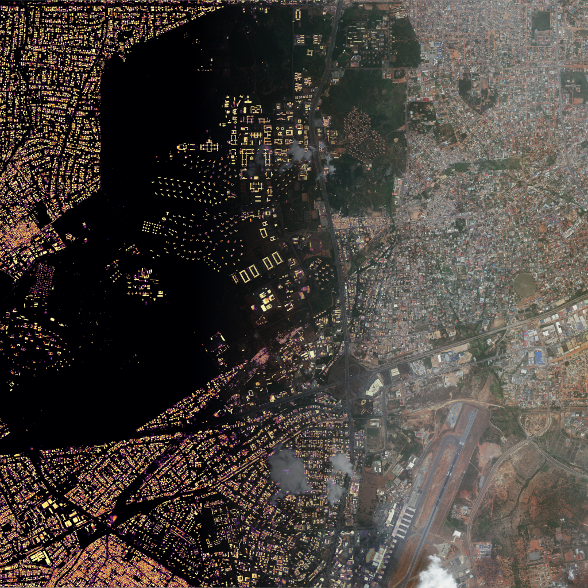

Machine learning & data consultancy
Performant machine learning, end to end.
I'm Rudy — a data scientist with a PhD in neuroscience. I train machine learning models, write the software that puts them to work, and help teams figure out where they're actually worth it — backed by over a decade of work experience across research and industry.
- Background
- PhD in neuroscience
- Experience
- 10+ years, research & industry
Models
Training and evaluating machine learning models — from classical methods to deep learning and LLMs — tuned to your data and constraints.
Software
The engineering around the model: pipelines, deployment, and integration, built to run reliably in production.
Strategy
An honest assessment of where machine learning is worth it — and where it isn't — grounded in a decade of research and industry work.
Selected work
Built, shipped, published.
Projects across machine learning, data science, and neuroscience — from production systems running on edge devices to peer‑reviewed research.
Production system · Live on Bluesky
NeuroLex
A multi‑agent retrieval‑augmented generation system behind a social‑media bot for neuroscientists — ask it a question, and it answers from a century of published research.
Under the hood, cooperating agents handle each incoming query: understanding what's being asked, retrieving relevant passages from a large corpus of neuroscience articles, and composing an answer grounded in the retrieved text. The system is distributed by design: agent orchestration runs on an edge device, while model inference is handled by other devices — both local and in a cloud environment.
- Multi‑agent pipeline for query understanding, retrieval, and answer composition
- Retrieval‑augmented generation over roughly a century of neuroscience literature
- Distributed architecture: orchestration on an edge device, inference across local and cloud devices
- Live and answering questions in the wild
Applied research · Open‑sourcing planned
Smart Sampling
A computer vision foundation model that detects buildings in satellite imagery — built to make malaria monitoring across Western Africa representative of the local population.
Health surveys are only as good as their sampling frame. By segmenting building footprints from satellite tiles, the model helps locate where people actually live, so that households can be sampled representatively even where maps and registries fall short. The pipeline covers the full arc from raw imagery to per‑building predictions.
- Building detection and segmentation from satellite imagery
- Foundation‑model approach for robustness across diverse regions
- Enables representative household sampling for malaria monitoring
- To be open‑sourced


Open‑source application
LLMLynx
A self‑hosted interface for working with large language models — local‑first, with persistent storage and custom agent building.
LLMLynx is built on a simple principle: your conversations and your data belong on your machine. It provides a full chat interface for LLM interactions, keeps history in persistent storage, and lets you assemble custom agents tailored to your own workflows — designed around local‑first principles from the ground up.
- Self‑hosted UI for LLM interactions
- Persistent conversation storage
- Custom agent building
- Local‑first: your data stays with you
Open‑source Python library
AutoHPSearch
A Python library for automated hyperparameter tuning and end‑to‑end machine learning workflows.
AutoHPSearch trims the boilerplate out of model development. Define a search space and let the library explore it; assemble a complete pipeline from preprocessing through evaluation in a few lines of code; or fine‑tune a large language model on consumer hardware — no cluster required.
- Automated hyperparameter search
- End‑to‑end ML pipelines in a few lines of code
- LLM fine‑tuning on consumer hardware
- Free and open source
Open‑source application
Making Audiobooks
A free, open‑source application that turns ebooks into audiobooks with neural text‑to‑speech.
Point it at an ebook and it produces a listenable audiobook: the text is parsed and rendered as natural‑sounding speech by an included neural text‑to‑speech model. It was designed for people with reading disabilities, to make books accessible in audio form — and it's free for anyone to use or extend.
- Converts ebooks into complete audiobooks
- Designed for people with reading disabilities
- Includes a neural text‑to‑speech model
- Free and open source
Voice demo
Published research · Neuron, 2022
Decoding Brain Signals
A multi‑year research project training classifiers to read out what a person perceives — and how they act on it — from patterns of human brain activity. Published in Neuron.
The models decode stimulus and action information from recorded brain signals, mapping where in the cortex each kind of information can be read out and how reliably. It's machine learning applied under hard constraints: noisy data, limited trials, and results that have to hold up to peer review.
- Classifiers that decode stimulus and action information from human brain activity
- Region‑by‑region mapping of decoding accuracy across the cortex
- Peer‑reviewed and published in Neuron

Get in touch
Let's talk.
Considering a project or want a consultation? The fastest way to reach me is the contact form — or email directly.
or email info@brinkdatascience.com
- Educational background, through PhD, is in neuroscience.
- I work mainly in Python with the machine learning and data visualization ecosystem.
- Code examples live on my GitHub.
Tech stack
Elsewhere